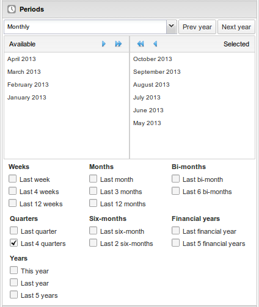

The left menu will list sections for all available data dimensions. From each section you can select any number of dimension items. As an example, you can open the section for data elements and select any number of data elements from the available list. You can select an item by marking it and clicking on the arrow in the section header or simply double-clicking on the item. Before you can use a data dimension in your pivot table you must at least select one dimension item. If you arrange a dimension as columns or rows but do not select any dimension items, the dimension will be ignored.
For the indicator and data element dimensions you must first select one or all groups from the group list. You can then select data elements from the available items list.
For the period dimension you can choose between using fixed periods or relative periods. An example of a fixed period is "January 2012". To select fixed periods start by selecting a period type from the period type list. You can then select periods from the list of available periods. Relative periods are periods relative to the current date. Examples of relative periods are "Last month", "Last 12 months", "Last 5 years". Relative periods can be selected by ticking the checkboxes next to each period. The main advantage of using relative periods is that when you save a pivot table favorite, it will stay updated with the latest data as time goes by without the need for constantly updating it.
For the organisation unit dimension you can select any number of organisation units from the hierarchy. To select all organisation units below a specific parent organisation unit, right click and click "Select all children". To manually select multiple organisation units, click and hold the Ctrl button while clicking on organisation units. You can tick "User organisation unit", "User organisation unit children" or "User organisation unit grand children" in order to dynamically insert the organisation unit or units associated with your user account. This is useful when you save a pivot table favorite and want to share it with other users, as the organisation units linked with the other user's account will be used when viewing the favorite.
|  |